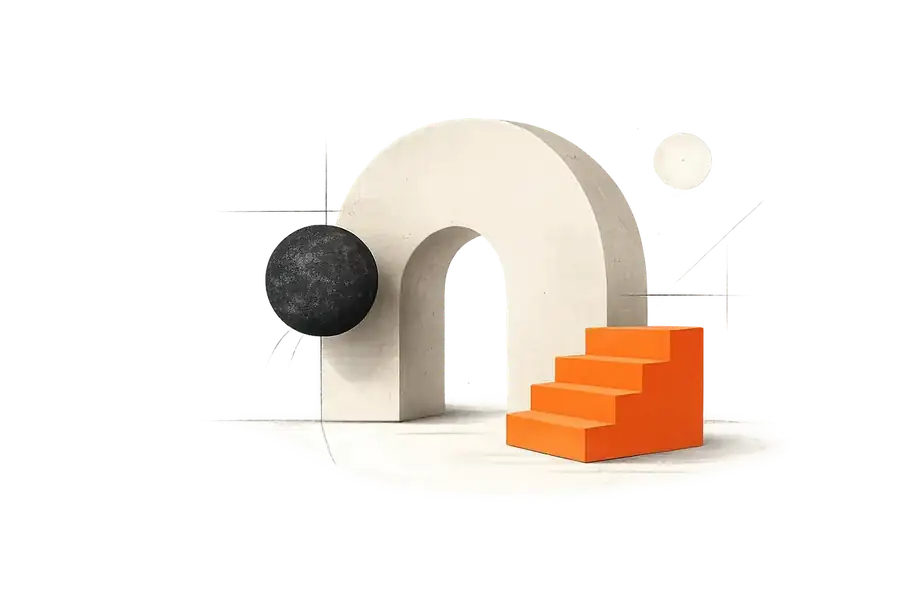
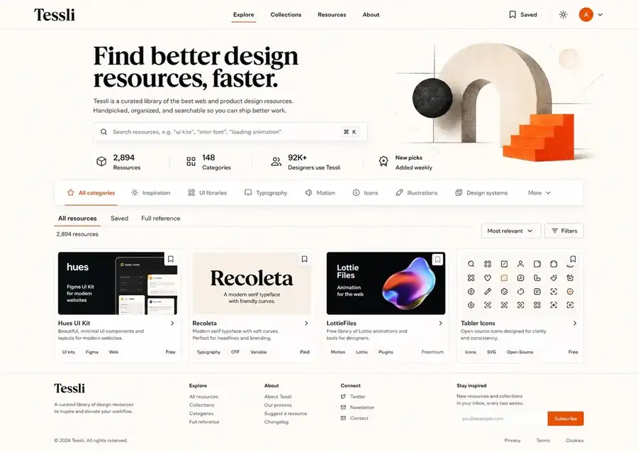
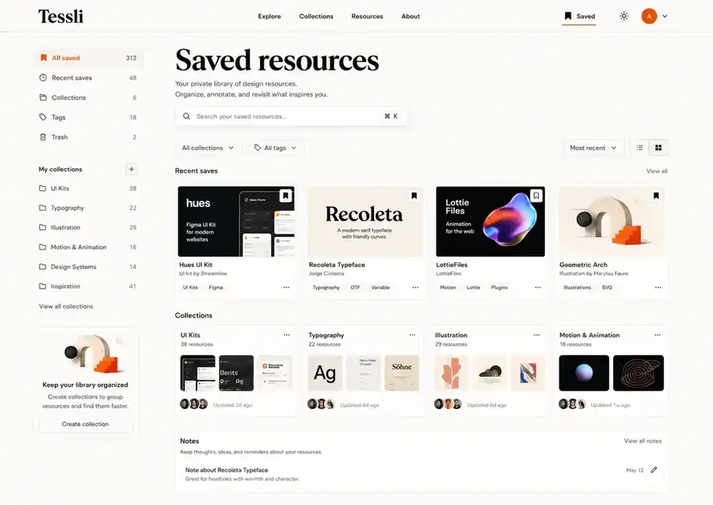
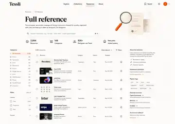

Spacing rhythm
48121624324872
Use a 4px base, but compose sections with 24–72px intervals. Quiet whitespace is part of the brand, not unused space.
Browser-rendered visual source of truth
A warm, editorial interface system for a curated design-resource index. This page tests the actual type, color, grain, spacing, responsive behavior, and component language before application development begins.
01 — Foundations
The color system avoids clinical white, heavy shadows, glass panels, and decorative gradients. Orange is a signal, not a wallpaper.
Select a swatch to copy its hex value.
Spacing rhythm
Use a 4px base, but compose sections with 24–72px intervals. Quiet whitespace is part of the brand, not unused space.
Surface language
Borders carry most hierarchy. Shadows are reserved for floating search, menus, and focused overlays.
Corner system
Compact controls stay tighter. Editorial panels can soften slightly, but Tessli should never become a collection of bubbly cards.
02 — Typography laboratory
Use the controls to stress-test the chosen variable-font weights. The preferred starting point is Newsreader 650 and Instrument Sans 500.
Newsreader Variable · optical size 64
Instrument Sans Variable · width 98
Tessli helps designers and developers find curated references without turning research into another noisy feed.
03 — Interface components
Every control uses deliberate typography, visible focus, quiet borders, and restrained elevation. Hover is never the only signal.
Buttons
Fields and search
Tags and tabs
Feedback and focus
Resource-card system
Manual preview → Open Graph image → favicon tile → Tessli letter mark.

Approved previewCurated directory of design inspiration and useful design resources.
Searchable screenshots and flows from real mobile and web products.
Copyable React components built with Radix UI and Tailwind CSS, shown with a longer description to verify card rhythm.
04 — Hero composition
This specimen uses truthful catalogue facts, the approved geometric asset, real browser type, and a responsive composition.
Tessli is a curated library of useful web and product-design resources. Handpicked, organized, and searchable so you can spend less time hunting and more time building.
05 — Approved visual references
These are art-direction references, not screenshots to trace literally. Real content and browser constraints take precedence.



